Introduction¶
Table of Contents:
- Basics and Language
- Logic and Computation
- Language Games
- Naming and Necessity
- Deep Learning
- Large Language Models
- Algebraic Topology and Categories
- Type Theory
- Theorem Proving
- Models of the Mind
- Scaling RL for LLMs
- Compression
- Symbolic Reasoning
- Strong Trial and Error
- Thinking Machines
The purpose of this article is not to convince you of anything or spare you from thinking about the foundation of mathematics, language or computation which have evolved over centuries. Rather it is to give you enough context and rigor that you can start questioning and thinking about these things for yourself.
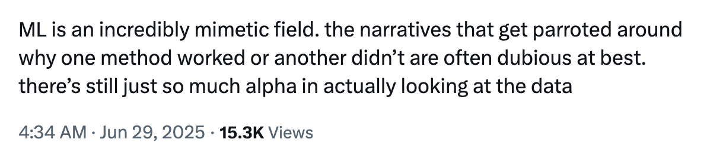
Now what could be a better place to start introducing you to everything that we want to talk about than a question phrased in the likening of Socrates.
What is a symbol that you and I may know it, what are we that symbols may be known to us, and how may we arrange rocks that they may know a symbol too?
It’s a simple question (inspired from a Warren McCulloch article) but its underbelly forms a fucking Langlands Program.
- Does a symbol represent anything (reality / meaning / concepts) beyond its syntax?
- Intentionality, Philosophy of Mind
- Definition Problem, Philosophical Logic
- Internal Representation Problem, Cognitive Science
- How does a symbol acquire meaning?
- Grounding Problem, Philosophy of Language
- Can we replace symbol for program (in a machine) / proof (in a logic) / path (in a shape)?
- Foundation Problem, Mathematics
- Curry Howard Lambek Correspondence, Computer Science
- Definition Problem, Mathematical Logic
- Is knowing not computational?
- Church-Turing Hypothesis, Computer Science
- Weak and Hard Problem of Consciousness, Cognitive Science
- What does it mean to know?
- Gettier Problem, Epistemology
Going with our parable of arranging rocks, if there is one thing that I would want you to take away from this article, it is that everything we discuss here is utterly useless if we don't try to build anything out of it and to build anything would be utterly useless if it doesn't free us to do useless things (absurd subjective destitution).
As you read, you'll notice this article is poor in academic jargon and formalism. This is intentional. I've seen too many papers and books prioritize “sophistication” over being genuinely helpful.
Sometimes such sophistication is essential. Especially if you want to do careful maintenance and authoritative referencing. But not when you want to plant a tree rather than tend a garden.
I will try to keep things:
- Simple and coherent enough to understand
- Rigorous enough to experiment with
- Succinct enough to use as a primitive module / concept / abstraction
- Interesting enough to actually give a shit
This isn’t just hand-waving. The dynamic between coherence or semantic fidelity with succinctness or compression reflects a fundamental tradeoff in how we learn and understand.
Basics and Language¶
In the beginning, God created “אב”. (Genesis 1:1)
In the beginning God created “naming and asserting definite existence from names, with which he made” the heavens and the earth. An homage to the importance of language and naming.
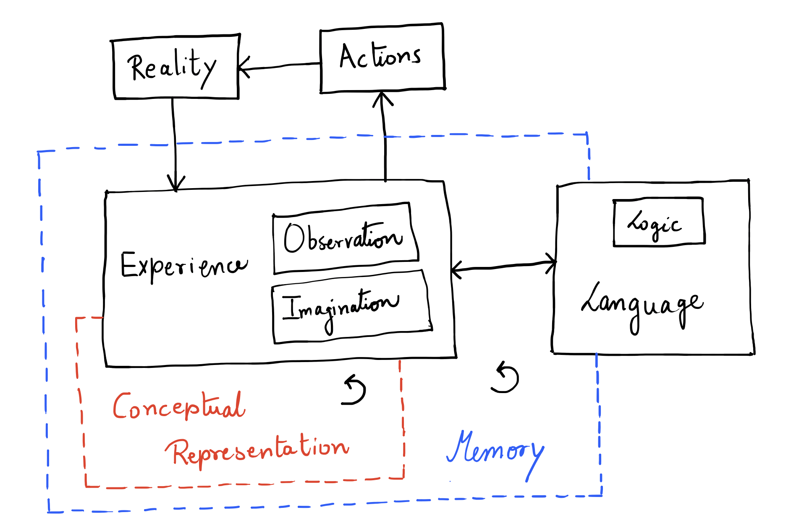
Conceptual Representation¶
Conceptual representation can be (at least):
- Compositional
- Recursive
- Narrative (> strong temporal coherence)
- Self-referential
- Multi-modal
Thus, the CR space has to be hierarchical by definition. Spanning and binding requirements must exist which can also tell us why some representations are better than others for particular use cases.
Can spanning and binding (SR dynamics) be the base for compression and coherence? Can we think of precision, reliability, efficiency and fidelity just in terms of SR dynamics or do we need more axes?
- Planning and reasoning as computational processes?
- Is world model an emergent property? If not should it be completely inside CR-space? The argument for world model is satisfying the need to learn representing the world in a non task-specific way.
- Any collapsibility criteria?
We mentioned that CR is multimodal. Well, what are some of the modes of operation (ranked in order of abstractness)?
- Logical
- Spatial
- Linguistic
- Musical (more to do with timing than hearing)
- Emotional (includes interpersonal too, hence lower)
- Naturalistic (general observation)
- Kinesthetic (movement)
Intelligence¶
What is intelligence and how should we measure it for machines?
- If we want to do it in terms of generalization, we need to control experience and priors (already learnt concepts).
- Examinations are not a good proxy for measuring intelligence of current machines since these were designed for humans under the latent assumptions that they need to perform generalization to do well. Such latent assumptions do not hold for machines.
Is being conscious necessary to being generally intelligent (probably not)?
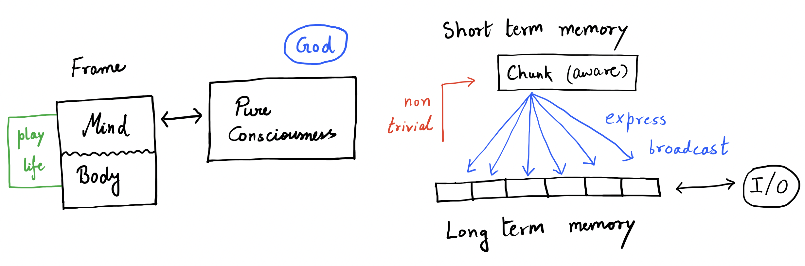
Language¶
Stories are how we sense reality. And language serves as an approximate communicator of (and about, hence recursive) stories.
But words can also utterly confound us. Hop on the wrong ones while playing across language games, and you shall see.
- All of language is analogy. Some of those analogies are logical.
- To communicate is not the same as to be.
- Isn’t all of symbolic representation language?
Knowledge¶
I know that I know nothing. (Socrates)
Plato said knowledge, classically, is defined as justified true belief. In other words:
\(S\) knows \(P\) if and only if:
- \(P\) is true.
- \(S\) accepts \(P\).
- \(S\) has adequate evidence for \(P\).
But is that sufficient? Well it was thought to be so until in 1963 Edmund Gettier under pressure to publish something submitted a 3 page article to the Analysis journal.
Gettier Problem¶
Suppose: You have asked John about his car multiple times to infer that yep, it is indeed owned by him. And Blake, as far as you know, has never even been to Staten Island.
Now suppose that due to some random event, John doesn’t own a Ford (the bank took it away, they say) but Blake ends up in Staten Island. Then \(P = A \vee B\) is still true. Thus we have that:
- \(P\) is true
- You have accepted \(P\) to be true.
- You have reasonable justification for \(P\) being true.
But did you really know \(P\)?
Meaning¶
Knowledge turned out to be slippery. That's because it sits downstream of something slipperier: meaning. What does it take for a symbol to mean anything at all?
Every theory of meaning is an attempt to prove Humpty Dumpty wrong, the guy who insisted a word means whatever he chooses it to mean. The main contenders:
| Theory | Slogan | Meaning of "dog" |
|---|---|---|
| Referential | words are labels for things | the set of all dogs |
| Ideational (Locke) | words are labels for ideas | your mental image of a dog |
| Truth-conditional (Frege, Tarski, Davidson) | knowing meaning = knowing truth conditions | its contribution to when "the dog barks" is true |
| Use (Wittgenstein) | meaning is use in the language game | everything the word lets you do |
| Intentional (Grice) | speaker intentions ground meaning | what speakers intend hearers to recognize |
| Externalist (Kripke, Putnam) | meaning is partly outside the head | whatever the community's usage is causally hooked to |
Sense and Reference¶
Frege noticed that \(a = a\) is trivial while \(a = b\) can be a discovery. "Hesperus is Phosphorus" (the evening star is the morning star, both Venus) was astronomy, not tautology. If meaning were just reference, the two sentences would say the same thing. They don't.
So meaning splits in two:
- Reference: the object a term picks out. Venus, for both names.
- Sense: the mode of presentation, the route the term takes to its object. "Brightest light at dusk" and "brightest light at dawn" are different roads to the same rock.
Two consequences worth holding onto:
- Sense can exist without reference: "the largest prime", "Pegasus". A symbol can be perfectly meaningful and point at nothing. Remember this when we get to hallucinations.
- Compositionality: the sense of a whole is built from the senses of its parts plus how they are arranged. This is the load-bearing wall of every formal semantics, and the reason conceptual representation had to be compositional back in our wishlist.
Meanings Ain't in the Head¶
Putnam's Twin Earth: a planet exactly like ours except the clear, drinkable stuff filling its lakes is XYZ, not H₂O. Twin-you is molecule-for-molecule identical to you: same brain state, same inner movie. But when Twin-you says "water" it refers to XYZ, and when you say it, it refers to H₂O. Same head, different meanings. His conclusion, verbatim: meanings just ain't in the head.
Two companion observations to keep you unsettled:
- Division of linguistic labor (Putnam again): you likely can't tell an elm from a beech, yet you mean elm when you say "elm." Reference is held up by experts elsewhere in your community; you're borrowing it. Most of everyone's vocabulary is borrowed reference.
- Speaker meaning (Grice): what a sentence means and what a speaker means by it come apart ("lovely weather" mid-hurricane). Sentence meaning is convention; speaker meaning is intention recognized as intended. Communication is cooperative mind-reading with props.
And then the operational payoff, from a linguist decades ahead of the curve (Firth): you shall know a word by the company it keeps. Take that literally, at scale, and you get distributional semantics: word2vec, embeddings, and eventually the models the back half of this article is about. Distributional semantics is the use theory of meaning turned into an algorithm.
Whether it captures meaning or only its shadow (sense unmoored from reference, at scale) is quietly the central question of this entire article. Park it. We'll be back.
Logic and Computation¶
The shortest history of a dream:
- Leibniz (1670s): build a language so precise that arguing reduces to calculating. When men disagree, let them say calculemus: let us compute.
- Hilbert (1920s): prove that mathematics is consistent, complete and decidable, using only finite mechanical means.
- Gödel (1931): no system worth its salt gets to be both consistent and complete. Consistency can't even be self-certified.
- Turing (1936): here is what "mechanical" means, exactly: a machine. And no, it can't decide everything either.
The dream of total certainty died, and the autopsy invented the computer. Logic is the rulebook of the symbol game; computation is what happens when you play it fast, blind and indefinitely. That the second thing fell out of the failure of the first is the best joke the twentieth century ever told.
Logic¶
A logic is three interlocking machines:
- Syntax: which strings of symbols are well-formed at all. Grammar, not truth.
- Proof theory: axioms plus inference rules for pushing symbols around. \(\Gamma \vdash \varphi\) means that from assumptions \(\Gamma\), the formula \(\varphi\) is derivable.
- Semantics: interpretations that assign truth. \(\Gamma \vDash \varphi\) means that every model making \(\Gamma\) true makes \(\varphi\) true.
\(\vdash\) is a claim about ink. \(\vDash\) is a claim about worlds. The entire subject lives in the gap between them:
- Soundness: \(\vdash\) implies \(\vDash\). The game never certifies a falsehood.
- Completeness: \(\vDash\) implies \(\vdash\). Everything true in all models is reachable by the game.
First-order logic has both (Gödel's completeness theorem, 1929: his PhD thesis, the good news). The bad news came two years later and is about theories, not the logic itself: any consistent, effectively axiomatized theory containing basic arithmetic must leave true sentences unprovable, and cannot prove its own consistency. People forever confuse the completeness theorem with the incompleteness theorems; blame whoever names things in logic.
Object Logic and Meta Logic¶
"This sentence is false." The liar is what happens when a language is allowed to freely talk about its own semantics.
Tarski's fix: split the tower. The object language is the one you reason in; the metalanguage is the one you reason about it with. Truth for the object language is only definable one floor up:
The left side mentions a sentence; the right side uses one. Use versus mention is the original sin of symbol manipulation; most paradoxes are just floors of the tower collapsing into each other.
And the tower is engineering, not philosophy:
- Gödel numbering is the discovery that arithmetic is expressive enough to serve as its own metalanguage. The engine of incompleteness is the object/meta wall being breachable from inside.
- Proof assistants are literally built this way: Isabelle's kernel is a tiny meta logic (an intuitionistic fragment of higher-order logic, with its own implication \(\Longrightarrow\)) inside which object logics like FOL, HOL and ZF live as guests with their own \(\to\). More on this when we reach theorem proving.
- A compiler is a metaprogram, a program whose subject matter is programs. Once you see the object/meta split you see it everywhere: quoting in Lisp,
eval, quines, prompt versus prompted model.
One more distinction, because it comes back with a vengeance in the type theory section: a logic can be classical (every statement is true or false whether or not anyone can check: the law of excluded middle) or intuitionistic (truth is constructibility; to assert existence, produce the witness). Classical logic is the logic of an omniscient spectator; intuitionistic logic is the logic of a builder. Guess which one compiles.
Computation¶
- CTD Principle: A (quantum) Turing machine can simulate any physical process.
- CTD Thesis: A quantum Turing machine can efficiently (within polynomial overhead; why polynomial? because compositionality) simulate any realistic model of computation.
- But what is computation? Any process that transforms information.
Why does the CTD Principle make sense? Because we assume that most process in the universe follow some form of logic. And Turing machines are just models which can execute such logic.
Interestingly, from this we can also figure out requirements that a Turing machine must satisfy. Namely, being able to execute any condition and doing so again and again indefinitely. It implements:
- Conditional branching
- Indefinite iteration
- Read, write or update operations over symbols
- Unbounded storage (let’s not call it memory)
A Turing machine is a 5 tuple. Anything a universal Turing machine can decide on or compute is an algorithm.
-
So what are then uncomputable things like? Here is an
example.# Hypothetical HALTS function def HALTS(program_text, input_data): # Somehow magically determines if program_text halts on input_data # Returns True if halts, False if runs forever pass # The troublemaker program def TROUBLE(program_text): if HALTS(program_text, program_text): # If it halts, loop forever while True: pass else: # If it doesn't halt, halt immediately return # Convert TROUBLE to its string representation trouble_source = get_program_text(TROUBLE) # What happens here? # We prove that HALTS cannot exist TROUBLE(trouble_source) -
Language: Set of strings over alphabet \(\Sigma\)
- \(L \subseteq \{0, 1\}^*\) when we fuck everything into binary shit, \(\Sigma\) becomes \(\{0, 1\}\)
- Any mathematical object can be encoded as a binary string.
-
Decision Problem: Is \(w \in L\)?
- Any problem is a mapping from a set of inputs to a set of outputs.
-
Any computational problem can be converted into a decision problem.
\[f:\{0,1\}^*\to \{0,1\}^*\]\[G(f)=\{(x,y):f(x)=y\}\subseteq\{0,1\}^*\] -
Any function \(f\) can be computed iff its graph \(G(f)\) can be decided.
- TM decides \(L\): \(\forall w\), TM halts, accepts iff \(w \in L\), rejects iff \(w \notin L\).
- A language \(L\) is called decidable if \(\forall w,\ \exists M\) which accepts when \(w \in L\) and rejects otherwise.
- A language \(L\) is called recognizable if when \(w \notin L\), \(M\) doesn’t halt but accepts otherwise.
- A language is called unrecognizable if \(\nexists M\) that recognizes it. Example: complement of the halting problem.
- If \(C\) is a complexity class, it can be defined as follows. Often while defining resource bounds we try to deal with polynomials because they are closed under composition.
Here is a list of several complexity classes.
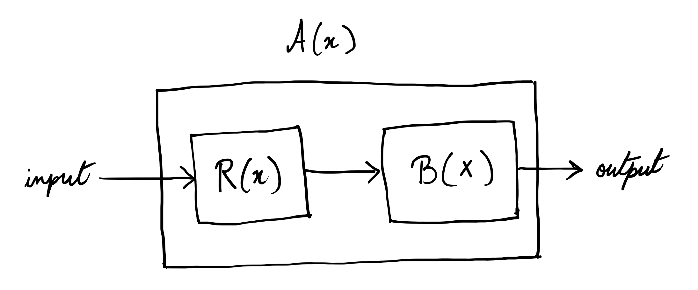
Say you have two decision problems \(A\) and \(B\). Then, \(A\) is said to be reducible to \(B\) if \(B\) can be used as a subroutine for \(A\). Then obviously, \(A\) is at most as hard as \(B\ (A\leq B)\) .
-
Comparing logic systems and their
complexities.Logic System Intuitive Explanation Satisfiability Validity Model Check Classical Logic Propositional Logic Basic logic with AND, OR, NOT - no quantifiers over variables NP-c coNP-c \(\in P\) Horn Clauses Restricted propositional logic where each clause has \(\leq1\) positive literal P-c P-c \(\in P\) First-Order Logic Logic with quantifiers \(\exists, \forall\) over individual objects/variables coRE-c RE-c PSPACE-c Monadic First-Order First-order logic restricted to unary (single-argument) predicates only NEXP-c coNEXP-c - Intuitionistic Logic Propositional Constructive logic, rejects law of excluded middle, requires explicit proofs PSPACE-c PSPACE-c P-c First-Order Constructive first-order logic with explicit existence proofs required coRE-c RE-c - Modal Logic \(K, T, S4\) Necessity (\(\square\)) and possibility (\(\large\diamond\)) with different axioms about accessibility PSPACE-c PSPACE-c P-c \(S5\) Modal logic where accessibility relation is equivalence (reflexive, symmetric, transitive) NP-c coNP-c \(\in P\) Epistemic Logic \(S5_n (n\geq 2)\) Multi-agent knowledge logic - what agents know about others' knowledge PSPACE-c PSPACE-c - \(K_n^C, T_n^C (n\geq2)\) Epistemic logic with common knowledge operator - what everyone knows that everyone knows EXP-c EXP-c -
What does asking computational complexity of logic systems even mean?
- Model checking asks: "In this model (object value assignment), is the formula satisfied?"
- Satisfiability asks: "Does any model (object value assignment) satisfy this formula?"
- Validity asks: "Do all models (object value assignments) satisfy this formula?"
Disjunctions¶
Is all thinking computational?
Gödel was more careful with his own theorem than his fans are. What he claimed follows from incompleteness (in his 1951 Gibbs lecture) is only a disjunction. Compressed:
Either the human mind surpasses every finite machine, or there exist absolutely unsolvable mathematical problems. Or both.
Reasoning: take the mathematical mind. If it is some consistent formal system \(F\), then by incompleteness there are truths, starting with "\(F\) is consistent", that it can never prove: mathematics has questions we are constitutionally unable to settle. If it is not any such \(F\), then minds do something no machine does. Mechanism or permanent mystery: pick at least one.
Lucas and later Penrose tried to collect the first disjunct for free. The pitch: hand me any formal system \(F\) claimed to model my mathematical reasoning; I can write down its Gödel sentence \(G(F)\) and see that it is true, which \(F\) cannot prove. So I am not \(F\), for any \(F\). Therefore minds are not machines.
The hole, found independently by basically everyone (Putnam and Chalmers wrote the canonical versions): you can see that \(G(F)\) is true only if you know \(F\) is consistent. For toy systems, sure. For a formal system big enough to be a candidate model of your entire mathematical mind, a few trillion synapses of undocumented legacy code, you have no such knowledge. Gödel's second theorem doesn't show you're not a machine; it predicts exactly how it would feel to be one: unable to certify your own consistency from the inside.
The escape routes sort into four (Dershowitz's paper sorts the family tree of responses to Penrose):
- We are consistent machines, but can never know which machine; our own program is unknowable to us.
- We are consistent machines, but cannot prove our own consistency. The limitation isn't evidence against mechanism, it's the signature of mechanism.
- We are inconsistent machines. Have you met us? (Paraconsistent logics even make this respectable: systems where a contradiction stays local instead of exploding into everything. A mind could contain its own falsehoods and still function.)
- We are not machines, at which point you owe an account of what non-computable physics the brain runs, and "quantum gravity in the microtubules" has so far convinced approximately nobody who wasn't already sold.
Note what survives all this: the disjunction itself. It is as close to a theorem about minds as logic delivers: either mind exceeds mechanism, or some mathematics is forever out of our reach. What does not survive is the shortcut from incompleteness straight to "therefore minds beat machines."
My stance is deflationary, and it's the bet of this article: whether or not all thinking is computation, every piece of thinking we have ever built is computation. If there is a non-computational residue, we will find its true boundary only by building up to it, not by declaring it from an armchair.
Language Games¶
Wittgenstein is the only philosopher who published the thesis and then outlived it long enough to write the rebuttal himself. Both halves matter here, because the twentieth century built machines out of each.
Language as Picture¶
The early move (the Tractatus, 1921): language works by picturing.
- The world is the totality of facts, not of things.
- A proposition is a picture of a fact: names stand for objects, and the arrangement of names mirrors the arrangement of objects.
- Logic is the shared scaffolding of language and world, which is why logic says nothing about the world. It is the frame, not the paint.
- Whatever cannot be pictured (ethics, aesthetics, the picturing relation itself) cannot be said. Proposition 7, the mic drop: "Whereof one cannot speak, thereof one must be silent."
Look at what this is: a compositional, referential semantics where meaning is a mapping from symbols to world. The Tractatus is the philosophical spec for symbolic AI, written thirty years early. Wittgenstein finished it, declared philosophy solved, and went off to teach elementary school in the Austrian mountains.
Language as Use¶
Then he came back and spent twenty years demolishing his own building.
The Philosophical Investigations opens with Augustine's picture of learning language (adults point, name, the child maps names to things) and then pulls a single thread until the whole sweater is gone:
- Ostension underdetermines. Point at two nuts and say "two": how does the learner know you mean the number and not the nuts, the color, the direction of your finger? Every act of pointing needs prior stage-setting to be understood. (Every dataset needs an inductive bias to be learned from. Same theorem, different century.)
- Naming is not the foundation of language; it is one move among thousands. Ordering, asking, joking, cursing, praying, greeting: each is a language game, a weave of words, actions and stakes into a practice. The builders' game of "Slab!" and "Block!" is a complete language with a four-word vocabulary.
- There is no essence shared by everything we call "language" (or "game": board games, card games, solitaire, ring-a-ring-a-roses; go find the one common feature, I'll wait). Just family resemblance: overlapping similarities, like a rope in which no single fiber runs the whole length. Categories with prototypes and fuzzy edges rather than definitions. Cognitive science spent the 1970s rediscovering this with data.
- And the slogan: for most purposes, the meaning of a word is its use in the language.
Rule Following¶
The deepest cut, and the one machine learning people should have tattooed somewhere visible.
You have seen "2, 4, 6, 8" and you continue "10, 12, …". Why not "2, 4, 6, 8, who do we appreciate"? Wittgenstein's point: any finite stretch of behavior accords with infinitely many rules, so no pile of examples, by itself, fixes the rule. Kripke sharpened it into a horror story: maybe by "+" you have always meant quus, which behaves exactly like plus below 57 and returns 5 above. Every calculation you have ever performed is consistent with both hypotheses. So what fact about you makes it the case that you meant plus?
The answer: no fact inside you. Rule-following is a practice. You follow rules the way your community follows them, trained by correction, and the regress of interpretations bottoms out not in more rules but in shared behavior, a form of life.
This is the generalization problem, stated eighty years before the first train/test split. A finite training set never determines the function; what a learner "means" by the pattern it found is fixed by its inductive biases, its form of life. Gradient descent has customs too: smoothness, locality, simplicity. When a model extrapolates weirdly it is not breaking the rule; it is following a different one that happened to agree with ours on the training set. Quus, all the way down.
Private Language¶
Could there be a language only I can understand, naming my private inner sensations (this feeling, which I hereby christen "S")? Wittgenstein: no. With no public criterion of correctness there is no difference between using "S" rightly and merely seeming to. A sign that cannot be misused is not a sign; it is a noise. Meaning needs an outside: correction, practice, other players.
Cash this out for the machines. LLMs are trained on the largest archive of language games ever assembled: every move, every correction, every bluff, transcribed. If meaning is use, they have absorbed staggering amounts of it. But they absorbed it the way a spectator absorbs chess: every game watched, none played, nothing staked. Whether spectating a form of life is enough to join it. That is the actual question hiding inside "do LLMs understand?", and we will meet it again properly in the LLM chapters.
Naming and Necessity¶
Three lectures, delivered from memory in 1970 by a 29-year-old, transcribed into one of the most influential philosophy books of the century, and fatal to a fifty-year consensus about how words work.
The consensus (Frege, Russell, roughly everyone): a name is a compressed description. "Gödel" abbreviates something like "the man who proved incompleteness"; reference goes to whatever fits the dossier.
Kripke's counterexamples are rude little stories:
- Suppose incompleteness was actually proven by a man named Schmidt, and Gödel stole the manuscript. If "Gödel" means "prover of incompleteness," then all along your word "Gödel" referred to Schmidt. But obviously it didn't; you would be saying something false about Gödel, the thief. Reference survives the death of its description.
- Ask someone who Feynman is. "Uh, a physicist?" That description fits ten thousand people. They refer to Feynman anyway, effortlessly.
So how do names hook onto the world, if not through dossiers?
- Baptism: someone names the baby, the star, the element.
- Chain: the name passes hand to hand, each user intending to refer to whatever the previous user referred to.
Reference is a causal-historical supply chain, not a mental description. You refer through your community's usage. Putnam's borrowed reference again, arrived at from the naming side. What is in your head can be nearly empty or nearly all wrong, and your words still reach their targets, because the chain does the carrying.
Rigid Designators¶
The modal half of the lectures. A name picks out the same individual in every possible world where it exists: Aristotle might never have taught Alexander, but he could not have failed to be Aristotle. A description slides: "the teacher of Alexander" picks out different people in different worlds. Names are rigid; descriptions are not. That asymmetry is the technical heart of the refutation.
And it cracks Kant's tidy wall between the necessary-a-priori and the contingent-a-posteriori:
- Necessary a posteriori: Hesperus = Phosphorus. Water = H₂O. Discovered empirically, yet true in every possible world: both names rigidly grip the same thing, so the identity could not have failed.
- Contingent a priori: "the standard meter bar is one meter long." You know it without measuring, because you fixed the reference that way, yet the bar could have been longer.
Necessity is metaphysics. A-priority is epistemology. They were only ever accidentally sharing an apartment.
Back to the Machines¶
Kripke relocates meaning from the speaker's interior to the speaker's supply chain, which changes what we should ask about machines.
- An LLM's "Gödel" was learned from a corpus that is itself downstream of the actual baptism and the actual chain of use. If reference rides causal-historical chains, the model may inherit reference the way any semi-competent speaker does: for free, from upstream. This is roughly Grindrod's argument that LLM outputs have linguistic intentionality: derived, secondhand, but real. And notice that the anti-grounding slogan, "it has only ever seen text", presumes meaning must live inside the speaker. That is precisely the internalism this chapter has been dismantling.
- A hallucination, in these terms, is a name with no chain: perfect sense, fluent use, zero baptism. Frege showed a symbol can mean and yet refer to nothing; LLMs industrialized the phenomenon.
Deep Learning¶
Artificial Intelligence is based on the idea of physical systems which can learn to do (def: solve) stuff.
- Rule based: Conditionals.
- Classical Machine Learning: Constrained geometric optimization where you assume predefined geometric structures for the solution and optimize under its constraints.
- Linear and non-linear regression: curve fitting.
- Logistic regression and SVM: separating planes (in SVM you map data into higher dimensions where planar separation works).
- Decision trees and random forests: partitioning space.
- Clustering: similarity grouping in space even hierarchically.
- Naive Bayes: Model probability distributions for each feature (assumes features are independent given the class).
- Deep Learning: Adaptive geometric optimization with implicit biases.
- DL biases are more about the learning process (hierarchical feature extraction, reusability of local patterns etc.) and computational structure than solution geometry.
- But then what about graph neural networks and shit?
- Even in GNNs and Geometric DL, the focus is on computational biases that respect geometry (like rotations / translations).
- Why the fuck is “geometry” everywhere? Because geometry is just a good description for spatial relationships.
- Reinforcement Learning: trial-and-error and a completely different paradigm.
One more way to cut all of this: everything above is program search. A rule-based system is a program you wrote. A learned model is a program the optimizer wrote, in a language (weights) that you cannot read. The astonishing empirical fact of the last decade is that gradient descent, a local and greedy and frankly dumb search, reliably finds programs that generalize, provided the substrate is differentiable and the examples are plentiful. Nobody fully knows why. Deep learning, honestly named, is the study of what this particular program-searcher can and cannot find.
Neural Networks¶
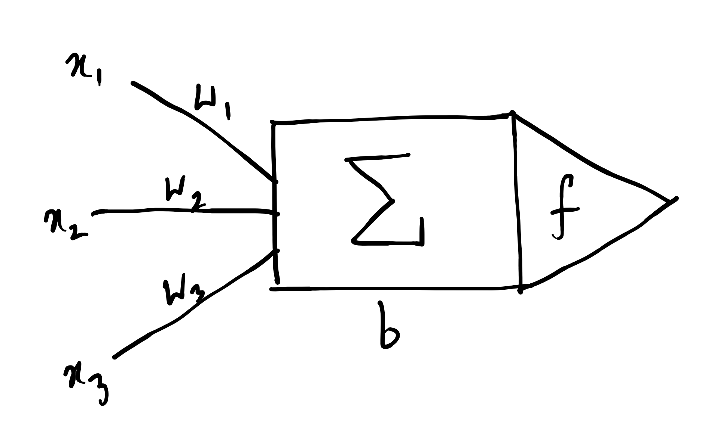
\(\Sigma\) is the transfer function. \(\vec{w} + [b]\) are the parameters.
\(f\) is the non-linear activation function. For example, \(\sigma(\cdot)\) as the sigmoid function.
Some generic notes on deep learning:
- The universal neuron is always a vector-to-scalar map.
- Layers can be vectors and them being adjacently stacked can lead to tensors.
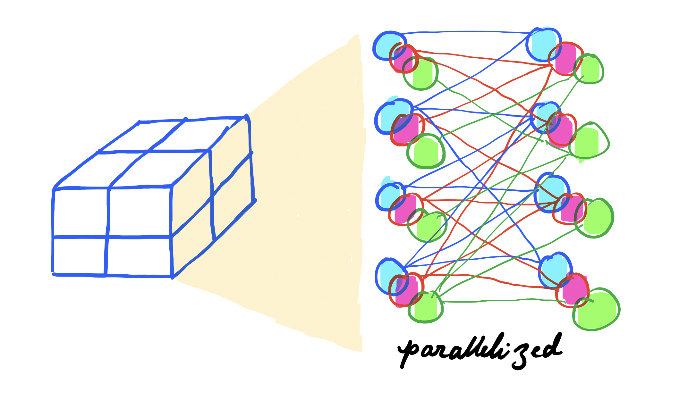
- However, we can abstract this into a tensor-to-tensor form through composition of multiple vector-scalar-maps.
Backpropagation¶
Backprop is basically a recursive application of chain rule backwards through the computational graph.
Be amazed at the price tag, though: the gradient of one loss with respect to a million parameters, for the cost of roughly one extra pass through the graph. Learning is credit assignment, credit assignment is the expensive part, and this is the cheapest credit assignment anyone has ever found.
Gradient Descent¶
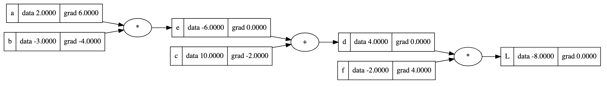
Consider a computational graph representing the function:
where the intermediate variables are defined as:
Suppose the initial values of the variables are \(a_0 = 2\), \(b_0 = -3\), \(c_0 = 10\), \(f_0 = -2\).
The gradients are manually assigned (fixed) as
and assuming a gradient ascent rule with learning rate \(\alpha = 0.01\) thus optimizing \(L\) towards zero using fixed gradient. Hence, we have \(a_n = 2 + 0.06n, b_n = -3 - 0.04n, c_n = 10 - 0.02n, f_n = -2 + 0.04n\).
- Plotting the
functionhere.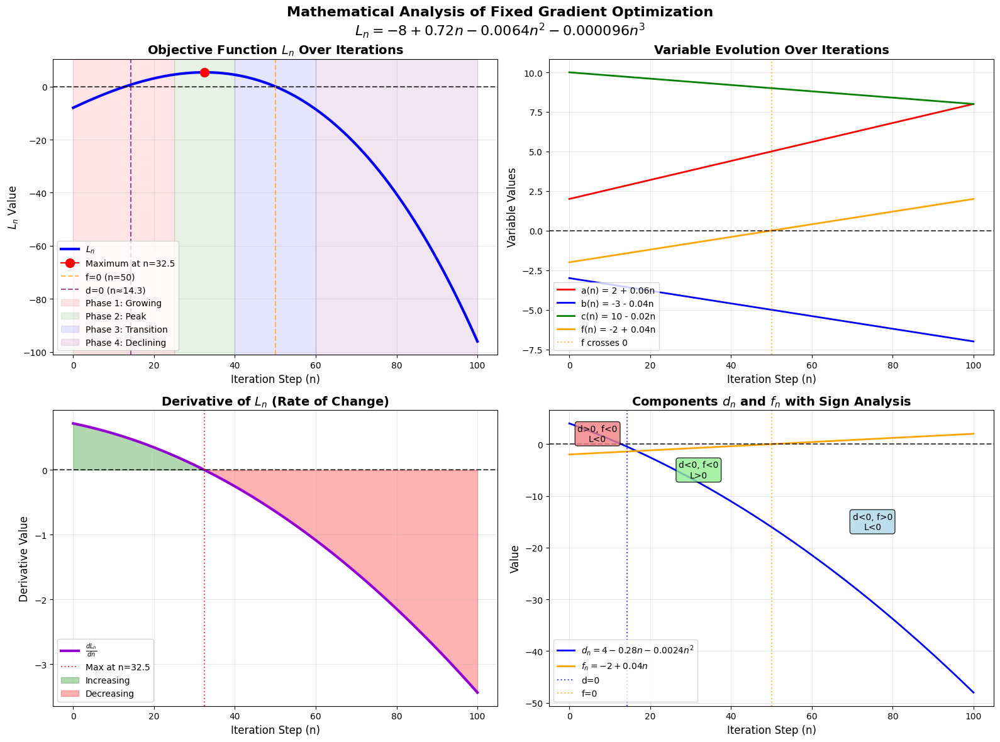
This is half the picture. We have been doing fixed gradient descent and it can overshoot optimal solutions if the gradients don't adapt.
We need to update the parameters themselves. \(\frac{\partial L}{\partial a} = 6 \not\equiv \frac{\partial L}{\partial a} = bf\) and clearly, \(b_0f_0 = 6\) but \(b_1f_1 = 5.96\) and so on. The fixed gradient approach is essentially performing a linear approximation of the loss surface that becomes increasingly inaccurate as you move away from the initial point. We should rather continuously recompute gradients to adapt to the changing curvature of the loss space.
Implementing Backpropagation¶
-
Defining a class
Value.import math class Value: def __init__(self, data, parents=(), op="", label = ""): self.data: float = data self.grad: float = 0 self.op: str = op self.backprop = lambda: None self.parents: set = set(parents) self.label: str = label def __repr__(self): return f"Value(data={self.data})" def __add__(self, other): other = other if isinstance(other, Value) else Value(other) out = Value(self.data + other.data, (self, other), "+") def backprop(): self.grad += out.grad * 1.0 other.grad += out.grad * 1.0 out.backprop = backprop return out def __mul__(self, other): other = other if isinstance(other, Value) else Value(other) out = Value(self.data * other.data, (self, other), "*") def backprop(): self.grad += out.grad * other.data other.grad += out.grad * self.data out.backprop = backprop return out def __radd__(self, other): return self + other def __rmul__(self, other): return self * other def __pow__(self, other): assert isinstance(other, (int, float)), "int/float powers for now" out = Value(self.data**other, (self,), f"**{other}") def backprop(): self.grad += out.grad * other * self.data**(other - 1) out.backprop = backprop return out def __truediv__(self, other): return self * other**-1 def __neg__(self): return self * -1 def __sub__(self, other): return self + (-other) def exp(self): x = self.data e = math.exp(x) out = Value(e, (self,), "exp") def backprop(): self.grad += out.grad * e out.backprop = backprop return out def tanh(self): n = self.data t = (math.exp(2*n) - 1)/(math.exp(2*n) + 1) out = Value(t, (self,), "tanh") def backprop(): self.grad += out.grad * (1 - t**2) out.backprop = backprop return out def relu(self): out = Value(0 if self.data < 0 else self.data, (self,), 'relu') def backprop(): self.grad += (out.data > 0) * out.grad out.backprop = backprop return out def backward(self): visited = set() def dfs(u): u.backprop() visited.add(u) for v in u.parents: if v not in visited: dfs(v) self.grad = 1.0 dfs(self) -
Defining a class
Neuron.import random class Neuron: def __init__(self, num_inputs): self.w = [Value(random.uniform(-1, 1)) for _ in range(num_inputs)] self.b = Value(random.uniform(-1, 1)) def __call__(self, x): act = sum((wi * xi for wi, xi in zip(self.w, x)), self.b) out = act.tanh() return out def parameters(self): return self.w + [self.b] -
Defining a class
Layer.class Layer: def __init__(self, num_inputs, num_outputs): self.neurons = [Neuron(num_inputs) for _ in range(num_outputs)] def __call__(self, x): outs = [n(x) for n in self.neurons] return outs[0] if len(outs) == 1 else outs def parameters(self): return [p for neuron in self.neurons for p in neuron.parameters()] -
Defining a class
MLP.class MLP: def __init__(self, num_inputs, list_outputs): size = [num_inputs] + list_outputs self.layers = [Layer( size[i], size[i + 1] ) for i in range(len(list_outputs))] def __call__(self, x): for layer in self.layers: x = layer(x) return x def parameters(self): return [p for layer in self.layers for p in layer.parameters()]
-
Implementing training.
for k in range(num): # forward pass ypred = [mlp(x) for x in xs] losses = [(yout - ygt)**2 for ygt, yout in zip(ys, ypred)] loss = sum(losses) # backward pass loss.backward() # update params and grad for p in mlp.parameters(): p.data += -0.05 * p.grad p.grad = 0 print(k, loss.data)
Universal Approximation¶
-
A bounded depth (1 hidden) and unbounded width shallow neural network is an universal approximator.
-
Sigmoid creates stepwise functions (stacking).
\[ \text{Core Idea}:\quad f(x) = \sum \pm\ \text{scale with direction} \cdot \sigma(w(x - \text{position})) \]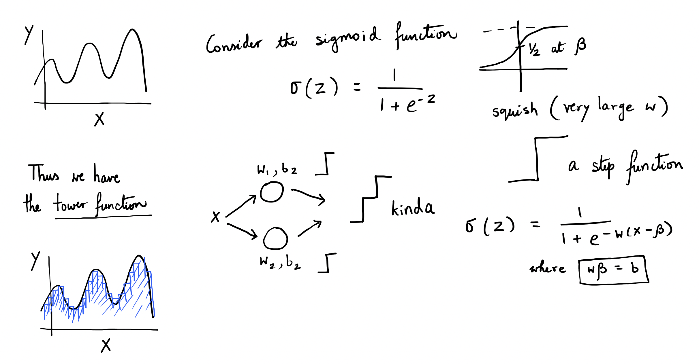
-
-
A bounded width (1 per layer) and unbounded depth neural network is an universal approximator.
-
ReLU creates piecewise linear functions (composition).
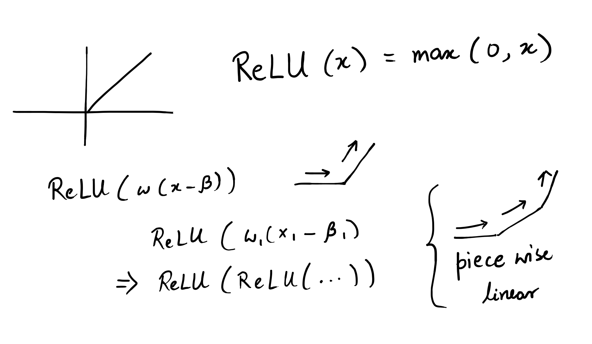
-
-
A bounded depth and bounded width (2 of each) NN is a universal approximator.
Hey so isn’t polynomial regression a universal approximator too? Well theoretically yes, but they suffer from:
- being numerically unstable
- oscillate wildly between data points (Runge’s phenomenon)
- overfitting while also being impossibly hard to fit with limited data
Neural Networks work better because they encode the right inductive biases for real problems.
- Composition matches hierarchical patterns in data (learnable feature extractions) and also helps estimate functions with much less parameters.
- Inductive biases allow easy encoding of geometry.
And a warning about all three theorems: universal approximation is close to the least interesting property a function class can have; polynomials have it, lookup tables have it. The theorems say a good network exists. They say nothing about whether gradient descent can find it, or how much data the finding takes. Representation, learnability and generalization are three different questions, and the entire game is the second and third.
Neural networks are the best example to show how computational equivalence differs from mathematical equivalence.
Kolmogorov Arnold Representation¶
Hilbert's thirteenth problem asked (in its continuous reading) whether functions of many variables secretly reduce to functions of fewer. Kolmogorov and his nineteen-year-old student Arnold answered in 1956-57 with maximum insolence: you never need more than one variable, plus addition.
Every continuous \(f:[0,1]^n \to \mathbb{R}\), exactly and not just approximately, is a sum of univariate functions of sums of univariate functions. The only genuinely multivariate operation in mathematics is addition.
Too good to be true? Somewhat. The inner functions \(\varphi_{q,p}\) the proof constructs are monsters: continuous but savagely non-smooth, fractal-grade objects, as hard to learn as the original \(f\) was. For decades the theorem sat in a drawer marked "true but useless"; Girosi and Poggio literally titled a paper calling it irrelevant to neural networks.
The 2024 move (KANs, Kolmogorov-Arnold Networks): stop demanding exactness, keep the shape. Put learnable univariate functions on the edges and plain summation on the nodes, then stack layers and let smoothness plus depth compensate for abandoning the exact theorem.
- MLP: learnable weights on edges, fixed nonlinearity on nodes.
- KAN: learnable nonlinearity on edges, fixed sum on nodes.
So everything reduces to: how do you parameterize a learnable, smooth, local univariate function? That is not a machine learning question. Computer graphics solved it fifty years ago.
Suppose you have \(n+1\) points and you want to find a parametric curve (Bezier curve) around them.
This is applicable recursively to give you the following.
Now if you have \(n\) points, then you need a \(n-1\) degree Bezier curve to interpolate them. That is quite expensive computationally.
Breakthrough: why not stitch together multiple lower-degree Bezier curves rather than one big curve?
That is the concept of a B-spline.
Chop the domain with a knot vector \(t_0 \le t_1 \le \cdots \le t_m\) and build basis functions by the Cox-de Boor recursion: degree-0 basis functions are indicator boxes on the knot intervals, and each higher degree linearly blends two neighbors from the level below.
What you buy for this bookkeeping:
- Local support: \(N_{i,p}\) lives on just \(p+1\) knot spans. Move one control point and the curve changes only in its neighborhood; the rest doesn't even hear about it.
- Smoothness: \(C^{p-1}\) across knots, by construction. Cubics (\(p=3\)) are the workhorse: smooth enough for eyes and gradients, cheap enough to evaluate.
- Refinability: insert knots where the function is interesting; resolution becomes a local budget you spend where it matters.
Locality is the word that matters. In an MLP every weight touches every input region, so learning something new smears an update across everything old; catastrophic forgetting is the default physics of dense weights. A spline learns the way a city grows: block by block. And since each edge of a KAN is a plottable univariate function, you can look at what was learned ("oh, that edge became \(\sin\)") and read symbolic structure straight off a trained network.
The fine print: at scale, well-tuned MLPs still generally win on raw benchmarks; splines cost more per parameter, and the exact representation theorem stopped applying the moment we asked for smoothness. Mathematical equivalence and computational usefulness part ways yet again. It is the same lesson universal approximation just taught us, from the opposite direction.
Modeling Language¶
Suppose I have names. How do I make more?
What if I pick a random character and then predict the next best one. Next-token prediction (with, in this case, token \(=\) character).
Before dismissing that as a parlor trick, look at what the objective actually demands. To predict the next character of a name you must implicitly model everything upstream of it: spelling, phonotactics, the fact that names end. Scale the same objective to all of text and the demand scales with it. Sutskever's test: to predict the final word of a detective novel, the sentence where the culprit is named, you must have understood the novel. Prediction is a tax on ignorance; every structure you fail to model gets billed to you as surprise.
- Model the sequence (or meta-sequence)
- Predict the next token in it
What are some assumptions we hold in the context of sequence modeling?
- Elements can be repeated
- Order matters
- Of variable (potentially infinite) length
Bigram¶
Suppose \(N(i, j) =\) count of “\(c_i, c_j\)”. Then, we can have our conditional probability matrix as
using which we can now generate new characters through a multinomial distribution (weighted dice throw).
-
Code for
inference.for i in range(10): # starts and ends with '.' # indexed as 0 ix = 0 while True: ix = torch.multinomial( P[ix], num_samples=1, replacement=True, generator=g).item() print(itos[ix], end='') if ix == 0: break print()
Can be generalized to \(n\)-gram with \(x_t\) denoting a token rather than a character and we have \(x\) as a bunch of tokens.
Even though this simplistic model works, it doesn’t scale.
Average NLL as Loss¶
How do we measure loss while trying to make more names? Assume that you have a model that has learned how to model names and make more. A good way to claim that this model is good is by showing that your model isn’t “surprised” by new real data.
Thus, we need to measure how much your model is surprised on some given input and use it as loss.
In our case, we have the following.
Likelihood: For a sequence of characters \(c_1, c_2, ..., c_n\), the likelihood is basically multiplication of probabilities. Note that \(c_1\) is the start token, so \(\log P(c_1) = 0\).
Log likelihood: Take the log to turn multiplication into addition.
Negative log likelihood: Flip the sign to follow loss function semantics.
Average: Divide by sequence length \(n\) to get the loss. It's basically "how wrong were your predictions?" averaged across all predictions.
And one more reading of the same formula, because it is the most important identity in this article: \(-\log P\) is a code length. Minimizing average NLL is minimizing the number of bits you need to encode the data. Training a language model is building a compressor. Everything downstream of here, generalization included, is what gets forced into existence when the compressor is squeezed. (That is the compression section's entire thesis, arriving early.)
Simple Neural Network¶
What if we calculate the probabilities implicitly through a neural network?
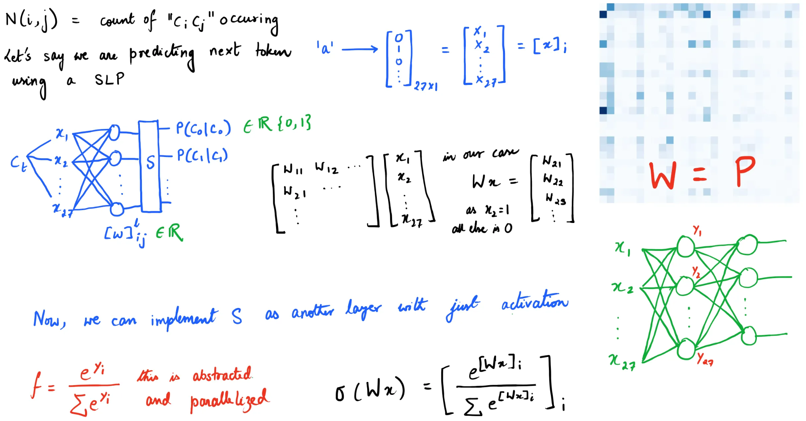
Note that this doesn’t include inferencing. What’s inferencing? Well in this case it’s generating the next token (character for us).
-
Code for
training."""Training""" # Setup xs, ys = [], [] for w in words: w = '.' + w + '.' for ch1, ch2 in zip(w, w[1:]): ch1_idx = stoi[ch1] ch2_idx = stoi[ch2] xs.append(ch1_idx) ys.append(ch2_idx) xs = torch.tensor(xs) ys = torch.tensor(ys) num = xs.nelement() # Initialize random weights W = torch.randn((27, 27), generator=torch.Generator(), requires_grad=True) for k in range(100): # Forward Pass xenc = F.one_hot(xs, num_classes=27).float() logits = xenc @ W # The following is basically softmax. counts = logits.exp() probs = counts / counts.sum(1, keepdims=True) loss = -probs[torch.arange(num), ys].log().mean() # Backward Pass W.grad = None loss.backward() # Update W.data += -0.05 * W.grad -
Code for
inferencing."""Inferencing""" ix = 0 name = "" while True: xenc = F.one_hot(torch.tensor([ix]), num_classes=27).float() logits = xenc @ W probs = F.softmax(logits, dim=1) ix = torch.multinomial(probs, num_samples=1).item() if ix == 0: break name += itos[ix] print(name)
Notice how the inference setup differs from the training setup. It almost always does.
Regularization¶
Regularization is any technique that trades “perfect” training accuracy for better generalization.
Why regularization?
- smooth (simple) weight distribution
- making model less confident or extreme to avoid overfitting
- programming humility and simplicity
- occam's razor and generalization
How do we do it? Let’s see an example.
Original loss or just negative log likelihood,
and with gravitational force (L2 regularization),
with that \(\lambda \sum W^2\) term as gravity - it constantly pulls all weights toward zero. The bigger the weights get, the stronger the pull back.
How does this lead to smoothness? The L2 term in loss function pushes for a flat probability distribution. Smoothness technically behaves like is an implicit prior bias that values simplicity and generalization.
MLP¶
The bigram's confession: its whole worldview is one previous character. The obvious extension, count tables over the last \(n\) characters, dies of the curse of dimensionality: \(27^n\) contexts, almost all never seen, and no way for the table to notice that similar contexts should behave similarly. Every row is a stranger to every other row.
The fix (Bengio et al., 2003) is arguably the most load-bearing idea in modern AI: embeddings.
- Give every character a learned vector, a lookup table \(C \in \mathbb{R}^{27 \times d}\).
- "Similar" becomes geometric: contexts built from nearby vectors produce nearby predictions.
- Generalization comes free: what the model learns about contexts containing "a" transfers to contexts containing "e" exactly to the extent that training pressure pushed those two vectors together. The table couldn't share; the geometry can't help sharing.
The architecture, in one line: embed the last \(k\) characters, concatenate, one hidden layer, softmax.
-
Code for the
network.C = torch.randn((27, d)) # embedding table W1 = torch.randn((k * d, h_dim)); b1 = torch.randn(h_dim) W2 = torch.randn((h_dim, 27)); b2 = torch.randn(27) emb = C[X] # (N, k, d) h = torch.tanh(emb.view(-1, k * d) @ W1 + b1) logits = h @ W2 + b2 # (N, 27) loss = F.cross_entropy(logits, Y) # same average NLL as before
Two practicalities that become rituals from here on out:
- Mini-batching: estimate the gradient on a random subset. A noisy gradient you can afford beats an exact one you can't. (Strong trial and error will make a whole philosophy out of this.)
- Splits: train on one slice, tune on dev, report on test, because with enough parameters the model will memorize the training set, and we already agreed that loss means surprise on new data.
Train it, then look at the embedding space: vowels cluster, rare characters drift off to their own corner. Nobody told the model about vowels. Similarity was learned as a side effect of prediction: structure precipitating out of compression. Keep that image; it is the story of the next several sections at miniature scale.
RNN¶
Feed the sequence one token at a time and maintain a hidden state, memory as recursion instead of as table:
The same weights run at every step, so any length fits. The catch: the entire history must squeeze through one fixed-size vector that gets rewritten at every step.


LSTM¶
The RNN overwrites its state multiplicatively at every step, so old information decays exponentially: the vanishing gradient again, now across time. The LSTM's move: an additive cell state guarded by learned gates (forget, input, output). Writing to memory becomes a choice rather than an inevitability, and gradients get an additive highway to ride back along.

Transformers¶
RNNs and LSTMs read the way we do: left to right, carrying a lossy memory, forgetting as they go. The transformer stops carrying and starts looking: every token gets to directly interrogate every token before it. Attention is a differentiable dictionary lookup: each position emits
- a query: what am I looking for?
- a key: what do I contain?
- a value: what do I hand over if you pick me?
Dot every query with every key, scale, softmax into weights, take the weighted average of values. That's it. That's the trick that ate the whole damn field.
- Why the \(\sqrt{d_k}\): dot products of \(d_k\)-dimensional vectors have variance that grows with \(d_k\); unscaled, the softmax saturates into a one-hot and gradients die.
- Causal mask: position \(t\) may only look at positions \(\le t\). Set the forbidden logits to \(-\infty\) and softmax zeroes them out. Every position of every sequence is a next-token problem, all trained in parallel.
- Multi-head: run several attentions in parallel in lower-dimensional subspaces and concatenate. Different heads learn different relations: previous word, subject of this verb, matching bracket.
-
Attention is permutation-equivariant, meaning it literally cannot see order, so position must be injected (learned vectors, sinusoids, or rotations).
-
Code for
attention, the heart of it.wei = q @ k.transpose(-2, -1) / math.sqrt(d_k) # (B, T, T) affinities wei = wei.masked_fill(tril == 0, float("-inf")) # causal: no peeking wei = F.softmax(wei, dim=-1) out = wei @ v # weighted sum of values
A transformer block then alternates two phases, and the division of labor is clean:
- Communicate: attention moves information between positions.
- Compute: an MLP transforms each position independently.
Residual connections make every block an edit to a shared stream rather than a rewrite: the stream flows through untouched unless a block has something to add, which is also why gradients survive a hundred layers. LayerNorm keeps the numbers civilized.
Why this architecture won:
- Parallelism: no recurrence means the whole sequence trains at once. The hardware lottery paid out.
- Path length: any token reaches any other in one hop instead of \(n\), so long-range dependencies stop dying in transit.
- It scales: stack more blocks, widen, feed more data, and the loss keeps falling on schedule. The design is almost aggressively free of cleverness, a general-purpose pattern-matching substrate that lets scale do the talking.
- The price: attention is \(O(n^2)\) in sequence length. Context is rent, paid quadratically.
And the GPT twist on top: drop the encoder half, keep the causal decoder, train on next-token prediction over everything. The humble objective from our bigram, unchanged since the counting table, just with a conditional distribution smart enough to be worth trillions of tokens.
Resist the deflationary read. "It just predicts the next token" carries about as much information as "a computer just moves electrons." The objective is humble; what the objective forces into existence is not. To keep lowering that loss, the model must keep absorbing the structure of whatever produced the text, which is, at the limit, the world.
Walls before LLMs¶
The road from perceptron to GPT is a sequence of walls, each of which looked fundamental in its decade. Notice the pattern in how they fell: nearly every breakthrough is one of two moves: help the gradients flow, or help the hardware parallelize.
- Single layer perceptrons can only solve linearly separable problems.
- Cannot learn XOR function or overlapping patterns etc.
- Breakthrough: training multiple layers is possible with backpropagation.
- SOTA: universal approximation theorem.
- Shallow networks worked well. But deep networks couldn’t train because gradients disappeared in early layers.
- Traditional activation functions (sigmoid and tanh) have very small derivatives in the flat parts of their S-shape.
- Breakthrough: layer wise pre-training.
- SOTA: ReLU (better activation functions), normalization, skip connections (ResNet), better weight initialization (Xavier).
- Standard MLPs can only handle fixed-size inputs, but language has variable-length sequences.
- Cannot process sentences of different lengths.
- No memory of previous words in a sequence.
- Had to truncate or pad all inputs to same length.
- Breakthrough: Recurrent Neural Networks (RNNs) with recurrent connections that maintain hidden state.
- RNNs couldn't learn long-term dependencies - gradients vanish over long sequences.
- Same vanishing gradient problem as deep networks, but across time steps.
- Models forgot information from early in the sequence.
- Couldn't learn relationships between distant words.
- Breakthrough: LSTM (1997) and GRU (2014) with gating mechanisms that control information flow. Gradient clipping.
- RNNs / LSTMs process sequences one step at a time, making training extremely slow.
- Cannot parallelize across sequence length.
- Training time scales linearly with sequence length.
- GPU utilization was poor due to sequential dependencies.
- Breakthrough: Attention mechanisms (2015) allowing direct connections between all positions.
- Seq2seq models created an information bottleneck at the encoder-decoder boundary.
- Entire input sequence compressed into single fixed-size context vector.
- Decoder has no direct access to input tokens, only final encoder state.
- Performance degrades severely with longer input sequences.
- Context vector becomes a lossy compression of all input information.
- Breakthrough: Attention mechanisms (2015) allowing decoder to directly attend to encoder states.
- Early attention mechanisms still relied on RNN / LSTM backbone architectures.
- Attention was just an add-on to sequential RNN processing.
- Still couldn't parallelize the core sequence processing.
- Complex alignment and attention weight computation.
- Required separate encoder and decoder RNN stacks.
- Breakthrough: Pure attention architecture (Transformer 2017) eliminating recurrence entirely.
- Encoder-decoder training inefficiencies for language modeling.
- Required separate encoder and decoder stacks (doubled model size).
- Cross-attention between encoder and decoder added complexity.
- Bidirectional encoder couldn't be used for autoregressive generation.
- Training required paired input-output data.
- Breakthrough: Decoder-only architecture (GPT) using pure autoregressive self-attention.
Large Language Models¶
The lineage, recapped in one breath before the family portrait. An RNN compresses everything-so-far into one fixed-size hidden state, rewritten at every step: a bottleneck with amnesia. The LSTM gives the bottleneck gates so it can choose what to keep, additively, which is why its gradients survive longer. The Neural Turing Machine (2014), the most honest architecture nobody uses, went further and separated processor from storage: a controller with an external memory matrix and differentiable read/write heads, addressing by content and by location, trained end to end. It could learn tiny algorithms (copy, repeat, sort) from examples alone. It was also miserable to train. The field's verdict: don't build the tape into the network; let attention be the memory. The NTM's ghost won anyway: an LLM wired to tools and retrieval over an external store is the same decomposition, rebuilt at datacenter scale.
Attention itself predates its own slogan: Bahdanau (2014) bolted it onto seq2seq RNNs so the decoder could consult every encoder state instead of one context vector, and translation quality jumped. The 2017 move was subtraction, not invention: delete the recurrence, keep the looking.
Since then, the transformer family tree is mostly a series of answers to four embarrassments of the vanilla design:
| Embarrassment | The fix | Representative species |
|---|---|---|
| Attention costs \(O(n^2)\) | sparsify, window, linearize, or just engineer the memory traffic | Sparse Transformer, Longformer, Performer, FlashAttention |
| No memory beyond the window | segment recurrence, compressed memories, retrieval from outside | Transformer-XL, Compressive Transformer, RETRO |
| Positions are a hack | relative, rotary, or attenuating position schemes | T5 bias, RoPE, ALiBi |
| Every parameter pays for every token | mixture of experts: route tokens to sparse specialists | Switch Transformer, Mixtral-style MoE |
An LLM, then, is: a decoder-only transformer + a tokenizer + a scandalous fraction of the internet + one objective (predict the next token) + scale. What made it a program rather than a gamble is that the loss falls as a smooth power law in parameters, data and compute, predictable enough to budget years in advance. (Chinchilla's correction to the first scaling laws: grow data with parameters, roughly twenty tokens per parameter; half the field's flagship models had been data-starved.) Pause on how strange the law itself is: a clean power law spanning many orders of magnitude, in a system nobody designed at any single one of those scales. It was found, not engineered: less an invention, more the discovery of a material property of learned computation. Post-training (instruction tuning, RLHF and its descendants) then turns the resulting internet-simulator into something you can talk to. The RL part gets its own section later.
Tokens and Thoughts¶
Two papers, one question: what is the relation between the tokens a model shuffles and anything deserving the name thought?
From Tokens to Thoughts (Shani, Jurafsky, LeCun, Shwartz-Ziv, 2025) takes the compression-coherence tradeoff from our introduction and makes it measurable. The setup: dig up the classic human categorization data (Rosch's 1970s experiments behind prototype theory, where a robin is a better bird than a penguin, membership is graded and boundaries are fuzzy) and compare against LLM embedding spaces, scoring both through a rate-distortion / information-bottleneck style objective: pay for representational complexity, pay for semantic distortion, and ask where a system chooses to sit on that frontier.
Findings, compressed (sorry):
- On broad strokes, models and humans agree: LLM concept clusters line up with human category boundaries far above chance. Bird, fish, furniture: the coarse carving matches.
- The fine structure diverges. Human categories carry typicality gradients, fuzzy edges, functional baggage, the robin-versus-penguin asymmetries that embedding geometry flattens out.
- The punchline: under the information-theoretic score, LLMs are better compressors than we are. Human concepts look statistically inefficient; we burn representational budget maintaining nuance that does nothing for reconstruction. The models optimize compression; we apparently optimize something else: usability of concepts for action, explanation, improvisation in an open world.
One paper, one operationalization, small old human baselines. Plenty to argue with. But it is the right kind of argument: quantitative, falsifiable, about representations instead of vibes. And it lands exactly on this article's opening claim: succinctness and semantic fidelity are competing objectives, and where a mind sits on that frontier is a design choice. If human-shaped concepts live at the "wasteful" end, pure next-token compression will not drift there by accident, no matter the scale.
Brainish (Liang, 2022) attacks from the constructive direction: forget analyzing. If you had to design the inner language of a mind, the thing tokens are a shadow of, what would the spec be? His answer: a multimodal inner monologue: words, images and sensations sharing one representation space, encoders and decoders around it, composable, compressed, yet decodable back into each modality. It is pitched as the inner language for the Blums' Conscious Turing Machine, which we will meet in the models-of-the-mind section. The inversion is the interesting part: language-of-thought as an engineering requirements document rather than a psychological hypothesis.
Now recall the wishlist for conceptual representation from the very top of this article: compositional, recursive, narrative, self-referential, multimodal. Text tokens natively check maybe two of the five. That gap between what tokens are and what thoughts need is, depending on your temperament, the reason to expect the current paradigm to plateau, or the roadmap for its next decade.
Philosophy¶
Millière and Buckner wrote the field guide to a debate in which everyone otherwise shouts past each other. The map, roughly, with the earlier chapters of this article finally cashing out.
The deflationary corner. Bender and Koller: models train on form, and meaning is not form. Their octopus: a hyperintelligent octopus taps the undersea cable between two islanders and learns to impersonate either side perfectly, until a bear attacks and one islander asks how to build a weapon, and the octopus has nothing, because it never had a world, only chatter about one. Add "stochastic parrots" and you have the complete skeptical toolkit: fluent recombination without contact with reality.
The ancestors of that intuition are better arguments than the slogan:
- Blockhead (Block, 1981): a giant lookup table storing a sensible response to every possible conversation is behaviorally perfect and intelligent the way a jukebox is a musician. Moral: intelligence is a property of how the answer is produced, not of the answer.
- The Chinese Room (Searle, 1980): a man in a room follows rules for shuffling Chinese symbols he does not understand, and the room passes every test. Syntax, says Searle, is not semantics. The strongest reply was always that understanding, if it is anywhere, lives in the system, not the clerk.
Here is why LLMs make these thought experiments interesting again instead of settling them: an LLM is provably not Blockhead. The lookup table for all conversations does not fit in the universe; a model that fits on a few GPUs and still generalizes must have compressed, and compression that extreme forces some algorithmic structure, somewhere. So the question stopped being rhetorical and became empirical: which parts are memorization and which parts are mechanism? That question now has a lab: interpretability. Othello-GPT is the clean demonstration: train a small transformer on legal Othello move sequences (pure form; it is never shown a board), find that a probe can read the full board state out of the residual stream, and, the actual kicker, edit that internal board representation and watch the model's moves change to match the edited board. Next-token prediction on form induced a world model. For a world of sixty-four squares, yes. Whether the same happens for bears, islands and weapons is an open empirical question, but it is a question now, not a slogan.
The externalist reply to "it's not grounded" is where our philosophy chapters do their work. If reference rides causal-historical chains of use (Kripke) and meanings ain't in the head anyway (Putnam), then "the model only ever saw text" is not automatically disqualifying: the text is causally downstream of the world, and the model is a node in our chains of reference: borrowed reference, like most of yours (Grindrod's linguistic intentionality; Mandelkern and Linzen ask, in exactly so many words, whether language models' words refer, and find the dismissive answer harder to sustain than it looks). On the use theory (Wittgenstein), competence in the games just is meaning, modulo the private-language worry from earlier: the models have read every transcript and played nothing. Spectators to the form of life they speak.
There is also the developmental frame (Buckner's angle): LLMs are the largest experiment ever run on the empiricist bet: how much structure can experience alone buy? Chomsky's poverty of the stimulus, meeting a stimulus of fifteen trillion tokens. Whatever your priors, this is data that philosophy of mind never had before.
Scoreboard, honestly kept:
- "It's just statistics" is dead as an argument. So is "it talks, therefore it understands." Both were always reports on the speaker's mood, not on the model.
- "Understanding" is decomposing into testable components (world models, reference, compositional generalization, self-knowledge) and they are arriving separately. Some are visibly present in the weights; others (stakes, embodiment, whatever consciousness turns out to be) are nowhere in the training signal and will not emerge from it by magic.
- The most useful phrase in the drawer is still Dennett's: competence without comprehension. The live question is which further competences quietly purchase which pieces of comprehension, and whether the remainder matters for anything except our self-esteem.
References¶
- Philosophy of Language by Martinich
- Understanding Deep Learning by Prince
- Attention? Attention! by Lilian Weng
- The Transformer Family Version 2.0 by Lilian Weng
- Driven by Compression Progress by Schmidhuber
- From Tokens to Thoughts by LeCun and others
- A Philosophical Introduction to Language Models by Milliere and Buckner
- On the Measure of Intelligence (ARC Paper) by Francois Chollet
- Large Language Models and Linguistic Intentionality by Jumbly Grindrod
- Searching Latent Program Spaces by Clement Bonnet and others
- Combining Induction and Transduction by Kevin Ellis and others
- Godel Disjunction by Wrigley
- On Paraconsistent Logic
- Four sons of Penrose by Dershowitz
- Brainish by Paul Liang
- Conscious Turing Machines by Manuel and Lenore Blum
- Minds, Machines, and Mathematics by David Chalmers
- Philosophical Investigations by Wittgenstein
- Naming and Necessity by Kripke
- A Neural Probabilistic Language Model by Bengio and others
- Attention Is All You Need by Vaswani and others
- KAN: Kolmogorov-Arnold Networks by Liu and others
- Emergent World Representations by Kenneth Li and others
- Do Language Models' Words Refer? by Mandelkern and Linzen